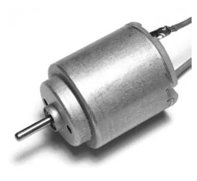
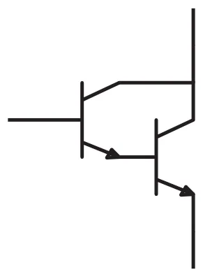
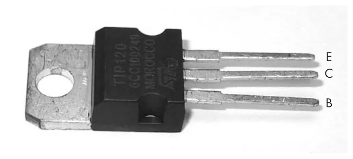

The next step in our motor-controlling journey is to work with small electric motors. Small motors are used for many applications, from small fans to toy cars to model railroads. As with servos, you need to consider several parameters when you’re choosing an electric motor:
- The operating voltage This can vary, from 3 V to more than 12 V.
- The current without a load The amount of current the motor uses at its operating voltage while spinning freely, without anything connected to the motor’s shaft.
- The stall current The amount of current used by the motor when it is trying to turn but cannot because of the load on the motor.
- The speed at the operating voltage The motor’s speed in revolutions per minute (RPM).
Our example will use a small, inexpensive electric motor with a speed of 8,540 RPM when running on 3 V, similar to the one shown in Figure 12-5.

To control our motor, we’ll use a transistor, which was described in Chapter 3. Because our motor uses up to 0.7 A of current (more than can be passed by the BC548 transistor), we’ll use a transistor called a Darlington for this project.
The TIP120 Darlington Transistor
A Darlington transistor can handle high currents and voltages. The TIP120 Darlington can pass up to 5 A of current at 60 V, which is more than enough to control our small motor. The TIP120 uses a similar schematic symbol as the BC548, as shown in Figure 12-6, but the TIP120 transistor is physically larger than the BC548.

The TIP120 uses the TO-220 housing style, as shown in Figure 12-7.

When you’re looking at the TIP120 from the labeled side, the pins from left to right are base (B), collector (C), and emitter (E). The metal heat sink tab is also connected to the collector.